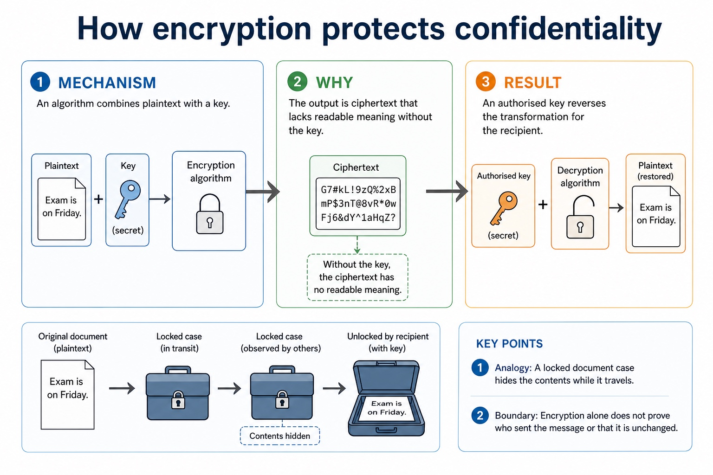
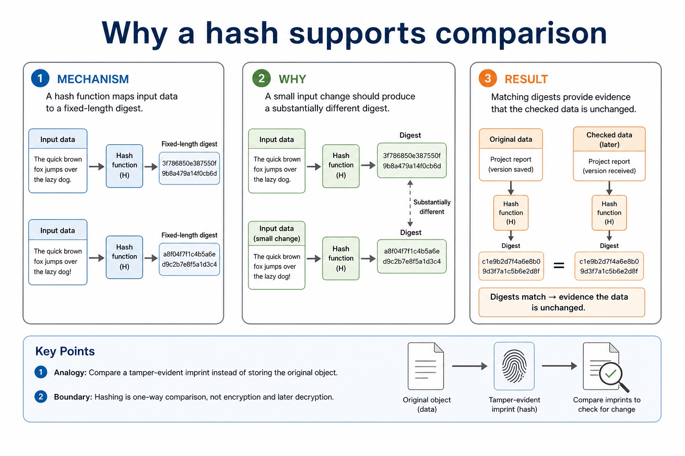
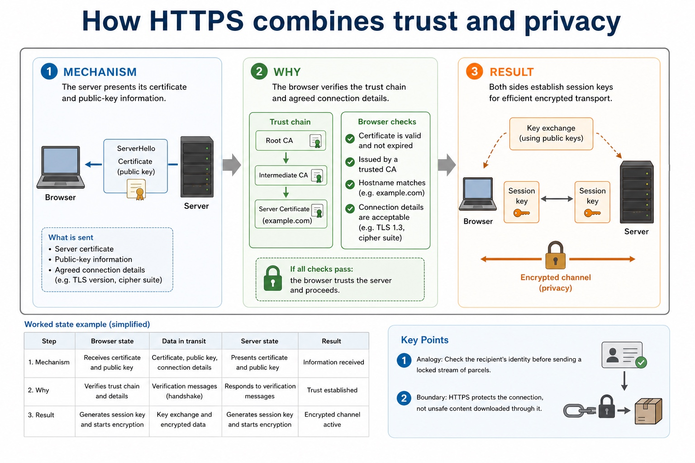
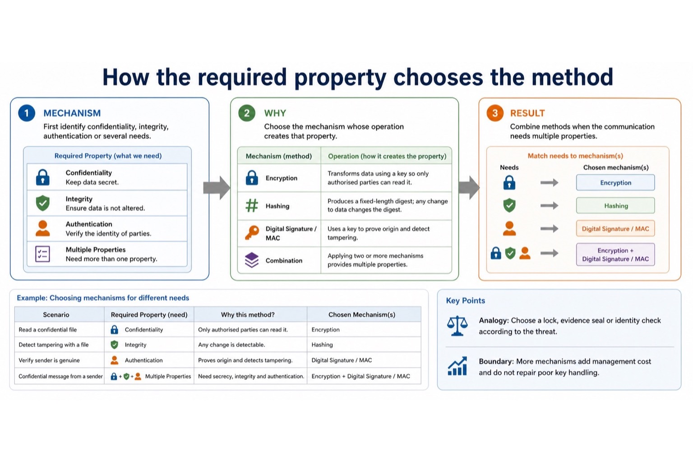

Lesson 067 | 45 minutes | Paper 1 Section 6 | Security, privacy and data integrity
Three security tools, three different jobs.
Encryption protects confidentiality by making data unreadable without a key.
Hashing creates a fixed digest used for checking or password verification, not for recovery.
Digital certificates help users trust that a public key belongs to the claimed website.
Separateencryption, hashing and digital certificates by purpose
Explainhow keys, hashes and certificate authorities support security
Applythe correct method to password storage, payment data and HTTPS scenarios
Encrypt -> hide readable dataDecrypt -> recover plaintext with keyHash -> one-way fixed digestCertificate -> trust website public key
If you can "decrypt" a hash, congratulations, you have invented the wrong answer.
Why this matters
CIE-style answers often reject vague "secure it" wording. Name the method and its mechanism.
Common trap
Passwords are normally stored as hashes, not encrypted plaintext waiting politely to be stolen.
Warm-up hook
A website stores a digest of your password, not the password itself. What method is being used?
The website is not trying to remember your secret. It is trying to recognise the fingerprint of your secret.
Choose one. Look for "digest" and "comparison".
Knowledge point 1
Security methods have different purposes
PlaintextReadable original data before encryption.CiphertextUnreadable encrypted data produced from plaintext and a key.Hash / digestFixed output created from input data, usually used for comparison or integrity checking.CertificateDigital evidence that links an identity, such as a website, to a public key.
Mechanism: Encryption hides readable content from unauthorised viewers.
Reason: Hashing creates a comparison value for integrity checks.
Result: Certificates bind an identity to a public key through trust.
Analogy: A sealed case, an evidence imprint and verified identity solve different problems.
Boundary: Using one mechanism does not automatically provide the other properties.
Knowledge point 2
Encryption protects confidentiality
MechanismUses an algorithm and key to convert plaintext into ciphertext.DecryptionUses the correct key to convert ciphertext back into readable plaintext.Use casesProtecting data stored on a device or transmitted across a network.LimitationIt does not prove data has not been changed unless integrity checks are also used.
How encryption protects confidentiality

How encryption protects confidentiality: mechanism, reason, result, analogy and boundary condition.
Mechanism: An algorithm combines plaintext with a key.
Reason: The output is ciphertext that lacks readable meaning without the key.
Result: An authorised key reverses the transformation for the recipient.
Analogy: A locked document case hides the contents while it travels.
Boundary: Encryption alone does not prove who sent the message or that it is unchanged.
Knowledge point 3
Keys control who can encrypt or decrypt
Symmetric keyThe same secret key is used to encrypt and decrypt; key sharing must be protected.Public keyA key that can be shared openly, often used to support secure communication setup.Private keyA key kept secret by its owner; if exposed, trust is damaged.TrapEncryption strength depends on keeping keys secure, not hiding the algorithm in a drawer.
Mechanism: A symmetric key can both encrypt and decrypt shared data.
Reason: An asymmetric key pair separates public and private operations.
Result: Protecting the private or shared secret preserves the security boundary.
Analogy: A public deposit slot can be open while only the owner opens the safe.
Boundary: If a secret key is copied, the algorithm cannot detect the impostor.
Knowledge point 4
Hashing is one-way comparison, not secret recovery
One-wayA hash is designed so the original input cannot feasibly be found from the digest.Fixed lengthThe digest has a standard length even if the input length changes.Password storageStore the hash; when a user logs in, hash the entered password and compare.Integrity checkIf data changes, the hash should change, so tampering can be detected.
Why a hash supports comparison

Why a hash supports comparison: mechanism, reason, result, analogy and boundary condition.
Mechanism: A hash function maps input data to a fixed-length digest.
Reason: A small input change should produce a substantially different digest.
Result: Matching digests provide evidence that the checked data is unchanged.
Analogy: Compare a tamper-evident imprint instead of storing the original object.
Boundary: Hashing is one-way comparison, not encryption and later decryption.
Knowledge point 5
Digital certificates help authenticate websites
ContainsOwner identity, public key, issuer, expiry date and digital signature information.Certificate authorityA trusted organisation that issues or signs certificates after checks.PurposeHelps the browser trust that a public key belongs to the claimed site.WarningExpired, mismatched or untrusted certificates can trigger browser warnings.
How a certificate supports trust
How a certificate supports trust: mechanism, reason, result, analogy and boundary condition.
Mechanism: A certificate contains an identity and its public key.
Reason: A trusted authority digitally signs that binding.
Result: Software verifies the signature before trusting the presented key.
Analogy: An independent registrar verifies which key belongs to which identity.
Boundary: A valid certificate does not guarantee that the website itself is honest.
Knowledge point 6
HTTPS combines identity checking with encrypted communication
1. RequestBrowser asks a website to start a secure connection.2. CertificateWebsite sends its digital certificate containing its public key.3. Trust checkBrowser checks issuer, expiry, domain match and signature chain.4. EncryptionA secure session is established so transmitted data is unreadable to eavesdroppers.
How HTTPS combines trust and privacy

How HTTPS combines trust and privacy: mechanism, reason, result, analogy and boundary condition.
Mechanism: The server presents its certificate and public-key information.
Reason: The browser verifies the trust chain and agreed connection details.
Result: Both sides establish session keys for efficient encrypted transport.
Analogy: Check the recipient's identity before sending a locked stream of parcels.
Boundary: HTTPS protects the connection, not unsafe content downloaded through it.
Knowledge point 7
Choose by job, not by favourite buzzword
Method
Main job
Good use
Common wrong use
Encryption
Protect confidentiality by hiding readable data.
Payment data in transit; sensitive files at rest.
Storing passwords so they can be decrypted later.
Hashing
Create a one-way digest for comparison or integrity.
Password verification; checking a file has not changed.
Trying to recover the original message from the hash.
Digital certificate
Link a public key to a trusted identity.
Browser checking a bank website before HTTPS.
Encrypting files directly by itself.
How the required property chooses the method

How the required property chooses the method: mechanism, reason, result, analogy and boundary condition.
Mechanism: First identify confidentiality, integrity, authentication or several needs.
Reason: Choose the mechanism whose operation creates that property.
Result: Combine methods when the communication needs multiple properties.
Analogy: Choose a lock, evidence seal or identity check according to the threat.
Boundary: More mechanisms add management cost and do not repair poor key handling.
Interactive method selector
Which security method fits the scenario?
Select a scenario and compare the method, reason and common wrong answer.
Interactive hash demo
A tiny demonstration hash, not a real security hash
This toy digest shows the idea that a small input change creates a different digest. Real systems use cryptographic hash algorithms.
Worked examples
Four model answers with strict method boundaries
Practice with instant checking
Short answers: choose the exact method
Type a concise answer. Use the local answer button if you need a model response.
Mistake debugging
Fix the sentence before it loses marks
Exam-style questions
Original Cambridge-style questions with expandable MS
Answer first. Then open the mark scheme and compare wording strictly.
Extra practice
Digital signatures
A sender hashes the message and encrypts the hash with the sender's private key to form a digital signature. The receiver uses the sender's public key to recover/verify the signed hash and independently hashes the received message.
Matching hashes provide evidence of integrity and origin/authenticity; a valid signature does not keep the message confidential. Certificates help bind a public key to an identity.
Worked example: Verify a signed update
The device verifies the signature using the publisher's public key, hashes the downloaded update and compares hashes. A mismatch means the file or signature is not valid.
Targeted practice
1. Which key creates a sender's digital signature?
Show answer
The sender's private key.
2. What does the receiver compare?
Show answer
The verified signed hash with a newly calculated message hash.
3. Does a digital signature encrypt the whole message for confidentiality?
Show answer
Not necessarily; its main purposes are integrity and authentication/non-repudiation evidence.
Exam-style question
4 marks
Describe how a digital signature is created and checked.
Show MS
B1 sender creates a hash of the message
B1 hash is signed/encrypted using sender's private key
B1 receiver uses sender's public key and hashes received message
B1 matching hashes verify integrity and provide evidence of sender authenticity
Summary
Do not swap the three methods
EncryptionReversible with the correct key; protects confidentiality.
HashingOne-way digest; supports comparison and integrity checks.
CertificatesBind public keys to trusted identities for secure communication.
Homework
Clear tasks, not vague revision fog
Task 1: Method tableCreate a table for encryption, hashing and digital certificates. For each, state purpose, one use case and one common misconception.Task 2: Website security paragraphExplain how an online shop should protect payment data, stored passwords and website identity. Use all three methods correctly.Task 3: 6-mark answerAnswer: "Compare encryption and hashing, and explain why a digital certificate is useful for HTTPS." Use precise security-goal vocabulary.